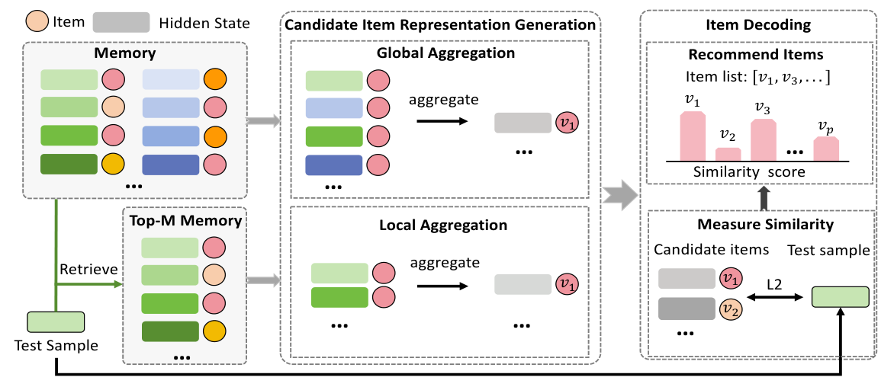

Decoding in Latent Spaces for Efficient Inference in LLM-based Recommendation (面向 LLM 推荐高效推理的潜在空间解码)
- 会议/期刊: EMNLP 2025
- 作者与机构: Chengbing Wang, Yang Zhang, Zhicheng Wang, Tianhao Shi, Keqin Bao, Fuli Feng, Tat-Seng Chua（中国科学技术大学、新加坡国立大学）
- 推荐链路定位: 端到端生成式（推理解码阶段）
- 研究方向: 大语言模型推荐 / 生成式推荐
- 论文原文: https://arxiv.org/abs/2509.11524v1
- 开源代码: 暂未开源
TL;DR (1分钟核心速览)
生成式 LLM4Rec 需逐 token 自回归输出物品标题，且推荐列表长度线性放大开销。本文提出 L2D：训练完成后把训练样本的末层隐状态与真实物品存入记忆库，按物品聚合出潜在空间表征；推理时仅做一次前向得到测试样本隐状态，用 L2 距离与候选表征匹配即可解码。在 Amazon CDs/Games 的 Full-Ranking 协议下，L2D 相比语言空间解码提速 10 倍以上，Recall@50 由 BIGRec 的 0.0565/0.0702 提升至 0.1569/0.1465。
Background & Motivation (背景与核心矛盾)
- 主流范式: 将用户历史拼成指令文本对 LLM 做 SFT，推理时自回归逐 token 生成物品标题（BIGRec/GPT4Rec/D3），或用 beam search 生成多个标题再映射回真实物品。
- 前人局限: 其一，token 生成串行等待，且推荐需生成整张列表，成本随列表长度线性增长；grounding 映射虽能降本，但仅生成 1 个物品映射到 top-10 会使性能下降约 50%（图 3）。其二，改用 ID 分类头虽快，却偏离 next-token 预训练目标，且需额外训练、在高维空间学稀疏物品表现差。
- 核心洞察 (Key Insight): 经生成式微调的 LLM 在末层隐状态中其实已"想好"了目标物品，自回归解码只是把它"激活"出来；因此只要在同一潜在空间里为所有候选物品找到对应表征，匹配即可完成解码。
- 本文切入点: 不改训练目标、不加新参数，纯用训练集已有的 (隐状态, 真实物品) 对构造物品表征，实现即插即用的潜在空间解码。
Method (核心方法设计)
1. 整体框架 (Overall Architecture)
L2D 分三步：① 记忆构建——对每个训练样本 \((s_j,v_j)\)取末层末位隐状态\(h_j=\mathrm{LLM}_{last}(\mathrm{prompt}(s_j))\)，与标签组成记忆集\(\mathcal{M}=\{(h_j,v_j)\}_{j=1}^{N}\)，该步可离线预计算；② 候选物品表征生成——把同一物品关联的所有隐状态聚合为该物品在潜在空间的向量；③ 物品解码——测试样本前向一次得\(h_t\)，与全部候选表征算 L2 距离取 top-\(K\)。后两步完全脱离 LLM，仅做向量级运算，故延迟极低。
flowchart TD
A["训练样本 prompt(s_j)"] --> B["LLM 末层隐状态 h_j"]
B --> C["记忆库 M = {(h_j, v_j)}"]
C --> D["按物品聚合隐状态"]
D --> E["候选物品潜在表征 h_v"]
F["测试样本 prompt(s_t)"] --> G["单次前向得 h_t"]
G --> H["L2 距离匹配 top-K"]
E --> H
H --> I["推荐列表"]
2. 关键设计拆解 (Key Designs)
-
全局聚合 L2D-G（物品的综合画像）：同一物品在不同历史上下文中被"想到"的隐状态各有侧重，单一状态片面。故对物品 \(v\) 关联的全部隐状态取均值： $\(\bar{h}_v=\frac{1}{|\mathcal{M}(v)|}\sum_{h_j\in\mathcal{M}(v)}h_j\)$ 直觉是多视角平均可抵消上下文噪声，得到稳定、通用的物品语义中心，对稀疏物品尤其稳健。
-
局部聚合 L2D-L（测试样本定制的物品表征）：全局均值会把与当前测试样本无关的特征面混入，造成干扰。故先按相似度 \(S(h_t,h_j)=1/\lVert h_t-h_j\rVert_2\)从记忆中检索 top-\(M\)个近邻构成\(\mathcal{M}_t\)，再在\(\mathcal{M}_t(v)\)内均值聚合得\(\bar{h}_v^t\)。这样物品表征随查询动态变化，聚焦于与当前用户意图最相关的特征面；当\(M\) 取满时退化为 L2D-G。
-
训练目标、负采样与推理效率：L2D 不引入任何新损失，完全复用原生成式 SFT 的 next-token 交叉熵，属训练后即插即用模块。解码阶段无负采样、无 beam search，仅一次 LLM 前向 + 一次全库向量距离计算，复杂度 \(O(Nd)\)且与列表长度无关；空间上每样本存一个\(d\)维 float16 向量（\(10^9\) 样本约 2 TB），可用蓄水池采样只保留 30% 样本而性能仍超基线（表 3）。
Experimental Setup & Evaluation Protocol (实验设置与评估协议)
- 数据集与预处理: Amazon 评论数据，按时间戳截断，过滤交互数 \(<5\) 的用户/物品（
5-core），用户序列截断至长度 10。
| 数据集 | #Users | #Items | #Interactions | 稀疏度/密度 | 特征/场景说明 |
|---|---|---|---|---|---|
| Amazon CDs | 见附录 A.5 | 见附录 A.5 | 中等规模 | 较稠密 | 音乐 CD，物品交互相对集中 |
| Amazon Games | 见附录 A.5 | 见附录 A.5 | 中等规模 | 较稀疏 | 电子游戏，长尾更明显 |
- 数据划分与防穿越 (Splitting Strategy): 交互按时间排序后按
8:1:1比例划分训练/验证/测试，严格时序切分避免未来信息泄漏。 - 排名评测协议 (Ranking Protocol): 无偏
Full-Ranking（全库未交互物品排序），指标 Recall@K 与 NDCG@K，\(K\in\{20,50,100\}\)。 - 对比基线与超参设置: 传统 SASRec/GRU4Rec；LLM 嵌入式 AlphaRec；LLM 生成式 GPT4Rec/BIGRec/D3（beam=1 作公平对比，其余 beam 见效率曲线）。骨干为 Llama 3.2-1B，隐状态维度 1024。
Key Experimental Results (实验关键数据)
1. 主实验对比 (Main Results)
| 模型 (beam=1) | CDs R@20 | CDs R@50 | CDs N@50 | Games R@20 | Games R@50 | Games N@50 |
|---|---|---|---|---|---|---|
| SASRec | 0.1015 | 0.1271 | 0.0653 | 0.0684 | 0.1117 | 0.0417 |
| GRU4Rec | 0.0707 | 0.1027 | 0.0439 | 0.0664 | 0.1099 | 0.0387 |
| AlphaRec | 0.0651 | 0.0976 | 0.0364 | 0.0619 | 0.1005 | 0.0371 |
| GPT4Rec | 0.0513 | 0.0562 | 0.0443 | 0.0508 | 0.0782 | 0.0347 |
| BIGRec | 0.0506 | 0.0565 | 0.0446 | 0.0476 | 0.0702 | 0.0328 |
| D3 | 0.0507 | 0.0560 | 0.0447 | 0.0478 | 0.0711 | 0.0330 |
| L2D-G | 0.1144 | 0.1562 | 0.0792 | 0.0646 | 0.1167 | 0.0397 |
| L2D-L | 0.1158 | 0.1569 | 0.0745 | 0.0879 | 0.1465 | 0.0511 |
| Improv. (vs 最强基线) | +14.1% | +23.4% | +21.3% | +28.5% | +31.2% | +22.5% |
2. 消融与变体实验 (Ablation & Variants)
| 变体 | CDs R@50 | CDs N@50 | Games R@50 | Games N@50 | 说明 |
|---|---|---|---|---|---|
| L2D-G | 0.1562 | 0.0792 | 0.1167 | 0.0397 | 全局均值聚合 |
| L2D-L | 0.1569 | 0.0745 | 0.1465 | 0.0511 | 局部 top-M 聚合 |
| ID 分类头 | 0.1490 | 0.0714 | 0.1557 | 0.0505 | 偏离生成目标，需额外训练 |
| L2D-G (仅存 30%) | 0.1391 | 0.0696 | 0.1314 | 0.0450 | 记忆压缩后仍超基线 |
| L2D-L (仅存 30%) | 0.1344 | 0.0649 | 0.1214 | 0.0407 | 同上 |
3. 关键实验发现 (Key Findings)
- 效率-效果双赢：图 3 中 L2D 位于最左上角，比此前最高效的 AlphaRec 再降本至少 5 倍且性能更高；生成式基线靠增大 beam 可线性涨点，但需近百倍成本才能追平，实际不可行。
- 稀疏/稠密场景分工明确：稠密场景下 L2D-L 因每物品隐状态充足、可剔除无关特征面而最优；稀疏场景下 top-M 近邻本身不可靠，L2D-G 的全局平均更稳（图 4）。超参 \(M\) 在 Games 上呈先升后降，说明该数据集更依赖细粒度特征面。
- 优于 ID 分类头且更抗稀疏：整体上 CDs 平均相对提升 11.2%；稀疏子集上优势更悬殊（CDs R@50 0.0889 vs 0.0671，Games R@50 0.0874 vs 0.0446），印证保留生成式训练范式比改分类头更能利用预训练知识。
Highlights & Limitations (亮点、对比与审稿批判)
- 与代表作对比 (vs. Prior Work): 与 BIGRec/D3 等生成式方法相比，本文不改训练目标、不加参数，仅替换解码方式，属即插即用；与 AlphaRec/RecFormer 等"潜在空间匹配"方法相比，后者修改输出层且匹配效果绑定训练过程，无法插入已有生成式推荐器，且训练目标偏离 next-token 预测。
- 可迁移亮点: ① "末层隐状态 + 标签聚合"可作为任意生成式推荐器的通用加速后处理；② 局部 top-M 检索式聚合本质是查询自适应的物品表征，可迁移到冷启动较少但长尾明显的场景做动态去噪。
- 审稿级局限批判: ① 记忆库需离线预构建并占用可观存储（\(10^9\) 样本约 2 TB），且论文未处理记忆的增量更新，交互持续累积时表征会陈旧；② 完全零交互物品仍无法覆盖，且仅在 1B 小模型与两个 Amazon 域上验证，更大骨干与工业级候选规模下的延迟/收益尚未证实。
Rating (四维评分)
- 方法创新性 (Novelty): ⭐⭐⭐⭐ （"隐状态即思想、匹配即解码"的视角简洁有力，但聚合与 L2 匹配本身较朴素，理论刻画偏直觉）
- 评估协议与实验扎实度 (Protocol & Experiments): ⭐⭐⭐⭐ （Full-Ranking + 时序切分规范，含稀疏/稠密分桶、\(M\) 敏感性与存储压缩实验，但仅两个数据集、缺显著性检验）
- 写作与数学规范度 (Clarity & Rigor): ⭐⭐⭐⭐ （公式极简清晰、三种聚合策略对比到位，复杂度与空间分析完整，但缺少对表征质量的进一步理论分析）
- 工业落地与复现价值 (Industrial & Practical Value): ⭐⭐⭐⭐ （即插即用、10 倍以上提速、30% 记忆即可超基线，落地价值高；扣分在于未开源与记忆更新机制缺失）